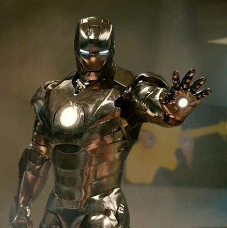

This page will show some of the most important suits Iron Man has made and used. This will include some of his earliest suits, to his final, and most advanced suits yet. It will show, and briefly talk about Mark I, II, III, VII, XLII, XLIV, L, and LXXXV.
This is Iron Man's very first suit, Mark I! This suit was the prototype, and not fully finished.

This is Iron Man's second suit, Mark II! It was made shortly after Mark 1. This suit looks much more similar to the suits he uses now, as it is much slimmer than mark 1. It also had more functionality, making it better than mark I.

This is his 3rd suit, Mark III. This suit is also the first one to have color. This suit was the first suit to be fully functional, and had full flight capabilities.

This is Mark VII. Mark VII introduced a deployment system, allowing for it to be called from anywhere, and it would travel straight to Tony Stark.
This is Mark XLII. Mark XLII introduced a new deployment system, allowing for it to be called to Tony in many pieces, meaning the suits could be taken apart for more compact storage, and still be called at a moments notice.

This is Mark XLIV. This suit was made only to be strong. It was made to be able to counter Hulk, so its very large and bulky.
This is Mark L. Mark L introduced nano-technology to his suits, allowing them to be summoned from anywhere, making its extremely compact, yet it still became his strongest suit yet. The nano-technology allowed for him to make weapons and shield at a moments notice.

This is Mark LXXXV. Mark LXXXV is made with his most advanced nano-technology, and was the best, and most powerful suit of armor he has ever made, or used.